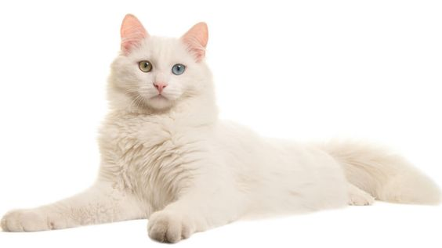

Pengertian Kucing adalah jenis hewan mamalia karnivora yang berasal dari keluarga Felidae.
Ini adalah hewan yang memiliki ciri-ciri khas seperti tubuh yang lentur, cakar tajam, gigi
taring yang kuat, dan mata yang dilengkapi dengan penglihatan malam yang sangat baik. Kucing
memiliki sejarah panjang sebagai hewan peliharaan manusia dan juga sebagai predator yang
efisien di alam liar.
Habitat kucing mencakup beragam lingkungan, tetapi mayoritas spesies kucing menghuni darat.
Banyak kucing hidup di lingkungan perkotaan, desa, atau lingkungan manusia sebagai hewan
peliharaan. Mereka telah menjalani proses domestikasi selama ribuan tahun dan menjadi sahabat
manusia yang setia. Kucing peliharaan sering kali diberikan perlindungan, perawatan, dan kasih
sayang oleh pemiliknya.
Di sisi lain, ada juga kucing yang hidup dalam keadaan liar di alam. Kucing liar ini seringkali
terbiasa mencari makanan dan bertahan hidup sendiri tanpa campur tangan manusia. Mereka dapat
ditemukan di berbagai ekosistem, termasuk hutan, savana, gurun, dan sebagainya.
Selain itu, penting untuk membedakan antara "kucing kecil" dan "kucing besar." Istilah "kucing kecil"
biasanya merujuk pada kucing domestik yang sering kita temui dalam rumah-rumah sebagai hewan peliharaan.
Mereka memiliki berbagai ras dengan karakteristik unik.
Sejarah Kucing

Kucing pertama kali didomestikasi di wilayah Mesir Kuno sekitar 4.000 tahun yang lalu. Pada awalnya,
kucing-kucing ini mungkin mendekati pemukiman manusia untuk memanfaatkan sisa makanan atau mencari
perlindungan dari pemangsa alam. Manusia mulai menyadari manfaat kehadiran kucing dalam memerangi hama,
terutama tikus dan kelelawar, yang sering merusak persediaan makanan dan bahan bangunan.
Kucing yang dihormati di Mesir Kuno sering kali diberi perawatan istimewa, termasuk perhiasan dan makanan
yang baik. Melalui perdagangan dan ekspedisi, kucing-kucing Mesir akhirnya menyebar ke berbagai bagian dunia.
Mereka tiba di Eropa sekitar abad ke-1 Masehi, dan dari sana, kucing-kucing tersebut menjadi populer sebagai
pemburu hama di seluruh Eropa. Selama Abad Pertengahan, kucing sering kali terkait dengan mitos dan superstisi.
Mereka dianggap sebagai makhluk yang mistis dan bahkan dikaitkan dengan penyihir. Namun, kucing masih berperan
penting sebagai pembasmi tikus di rumah-rumah dan ladang.
Selama periode tertentu di Abad Pertengahan, terjadi perburuan besar-besaran terhadap kucing karena terkait
dengan mitos dan kepercayaan negatif. Hal ini kemudian berkontribusi pada peningkatan populasi tikus, yang
membawa dampak negatif pada kesehatan masyarakat. Pada Abad Pertengahan Akhir dan Renaisans, pandangan tentang
kucing mulai berubah menjadi lebih positif. Kucing kembali dihargai sebagai pemburu hama dan juga sebagai hewan
peliharaan. Ras-ras kucing domestik yang berbeda mulai dikembangkan, dan kucing menjadi hewan peliharaan yang
populer di kalangan masyarakat. Kucing telah menjadi ikon dalam budaya populer, dengan karakter kucing yang
muncul dalam buku, film, kartun, dan media lainnya. Kucing juga sering menjadi subjek seni dan fotografi.
Karakteristik Kucing
Kucing adalah mamalia berukuran kecil hingga sedang dengan tubuh yang lentur dan tubuh yang biasanya
dilapisi dengan bulu lembut. Kucing memiliki kepala yang proporsional dengan tubuhnya.
Kepala kucing umumnya memiliki sepasang telinga yang tajam dan mampu bergerak dengan cepat.
Kucing memiliki empat kaki dengan cakar tajam yang digunakan untuk berburu dan meraih objek. Kaki belakang
kucing umumnya lebih kuat dan fleksibel dibandingkan kaki depannya. Kucing adalah hewan karnivora, yang
berarti mereka memakan daging sebagai makanan utama. Kucing dikenal sebagai pemburu yang baik dan sering
berburu hewan pengerat seperti tikus. Kucing memiliki kemampuan melompat yang luar biasa dan seringkali
bisa melompat tinggi atau panjang untuk mengejar mangsa atau mencapai tempat yang lebih tinggi. Mereka
juga dikenal dengan kecepatan dan refleks yang luar biasa. Kucing adalah hewan yang cenderung bersifat
soliter, meskipun mereka dapat membentuk ikatan dengan pemiliknya.
Mereka kadang-kadang teritorial dan dapat menjadi agresif terhadap kucing lain yang memasuki wilayah mereka.
Kucing adalah hewan yang sangat bersih dan mereka menghabiskan banyak waktu merawat diri mereka sendiri
dengan menjilati bulu mereka. Kucing menggunakan berbagai cara untuk berkomunikasi, termasuk suara
(misalnya, miau), gerakan tubuh, ekspresi wajah, dan bahasa tubuh. Kucing memiliki esokalase (cuping
telinga yang dapat bergerak) yang membantu mereka mendengarkan suara dengan lebih baik, terutama saat berburu.
Kucing sering digambarkan sebagai hewan yang mandiri dan cenderung melakukan banyak aktivitas mereka
sendiri tanpa banyak campur tangan manusia.
Meskipun kucing sering dikenal sebagai hewan yang mandiri, kucing betina cenderung sangat protektif
terhadap anak-anaknya (anak kucing disebut anak atau anak kucing). Perlu diingat bahwa karakteristik ini
dapat bervariasi antara individu kucing dan juga antara ras kucing yang berbeda. Beberapa kucing mungkin
memiliki sifat yang lebih aktif, sosial, atau tenang daripada yang lain.
Kembang Biak Kucing

Kembang biak kucing adalah proses pembiakan kucing untuk menghasilkan anak kucing atau
keturunan kucing baru. Kembang biak kucing dapat dilakukan untuk berbagai alasan, seperti
mempertahankan ras tertentu, meningkatkan sifat-sifat tertentu dalam populasi kucing,
atau hanya sebagai kegiatan.
Sebelum membiakkan betina, penting untuk memastikan bahwa ia dalam kondisi kesehatan yang baik.
Betina yang sehat akan memiliki peluang yang lebih baik untuk hamil dan melahirkan anak kucing
yang sehat. Ini juga mencakup pemberian vaksinasi yang sesuai dan perawatan kesehatan yang
diperlukan. Dalam banyak kasus, pemilik kucing yang ingin membiakkan kucingnya harus mendapatkan
izin atau persetujuan dari organisasi kucing terkait atau badan pengawas, terutama jika mereka
ingin terlibat dalam kembang biak ras murni yang diakui.
Setelah induk betina dan jantan dipilih, proses mating atau perkawinan dapat dimulai. Kucing
betina biasanya memiliki periode berahi (estrus) ketika mereka siap untuk berkembang biak.
Pada saat ini, mereka mungkin menunjukkan tanda-tanda perilaku seperti mengejar jantan atau
menjadi lebih mesra. Proses mating dapat berlangsung alami atau dengan bantuan seorang pembiak
hewan. Setelah proses mating, betina bisa hamil. Kucing hamil selama sekitar 63-65 hari sebelum
melahirkan. Betina akan mencari tempat yang aman dan nyaman untuk melahirkan anak kucing (anak
kucing disebut anak atau anak kucing). Biasanya, pemilik harus mempersiapkan tempat untuk melahirkan
dan memberikan perawatan khusus selama proses ini.
Perilaku Kucing
Kucing adalah hewan yang memiliki beragam perilaku yang menarik dan khas. Berikut adalah beberapa
perilaku umum yang sering terlihat pada kucing:
- Merawat Diri
Salah satu perilaku utama kucing adalah menjilati diri mereka sendiri untuk membersihkan bulu.
Ini adalah cara kucing menjaga kebersihan dan kesehatan bulu mereka.
- Berburu
Kucing adalah pemburu alami, bahkan kucing peliharaan masih sering menunjukkan perilaku berburu
seperti mengejar mainan atau serangga.
- Tidur Panjang
Kucing dikenal sebagai hewan yang tidur panjang. Mereka dapat tidur hingga 16 jam atau lebih dalam
sehari. Perilaku tidur ini membantu mereka mendapatkan energi untuk berburu atau bermain.
- Tanda Kepuasan
Kucing sering mengepulkan ekor mereka saat berada dalam suasana hati yang baik. Ini adalah tanda
kesejahteraan dan kepuasan.
- Menggaruk
Kucing sering menggaruk dengan cakar mereka. Ini adalah cara mereka merawat cakar mereka dan mengasahnya.
Ini juga bisa menjadi tanda penandaan wilayah.
- Marking Territorial
Kucing memiliki kelenjar di wajah mereka yang mengeluarkan feromon. Mereka sering menggosokkan wajah mereka
pada objek atau manusia yang mereka anggap sebagai milik mereka sebagai tanda penandaan wilayah.
- Berbicara
Kucing sering berkomunikasi dengan pemiliknya melalui suara. Mereka bisa mengeluarkan berbagai suara seperti
meong, mendesis, atau meraung. Suara tersebut bisa menunjukkan keinginan makan, perhatian, atau kebutuhan lainnya.
- Bersembunyi
Kucing cenderung suka bersembunyi di tempat yang nyaman dan aman, terutama ketika merasa terancam atau stres.
- Mainan
Kucing senang bermain dengan mainan, baik mainan yang dimaksudkan untuk kucing atau benda-benda kecil seperti
atau bola kertas. Bermain membantu mereka menjaga kebugaran fisik dan mental.